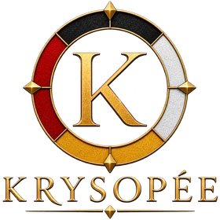

La plupart y répondent par l'agitation plutôt que par la méthode.
Krysopée conçoit et opère ses propres outils de trading, discrétionnaire et systématique, sur capital réel. Rien n'est proposé au public sur le compte Krysalide.
01
Distinguer le bruit de la structure
Le désordre apparent des marchés dissimule des configurations récurrentes. Notre discipline consiste à les reconnaître quand elles se forment — et à s'abstenir tant qu'elles ne le sont pas encore.
02
Une méthode en cinq strates
De l'observation à la décision, puis à l'exécution, jusqu'au retour d'expérience qui referme et nourrit le cycle suivant — chaque strate contrôle celle qui la précède, sans jamais la remplacer.
03
La protection avant la conviction
Aucun gain n'est acquis sans un mécanisme qui referme la porte derrière lui. La liberté prise à un instant devient la contrainte qui protège le suivant.
On n'arrive jamais par hasard sur un site comme celui-ci. Une question sur les marchés, une curiosité pour une méthode, ou simplement l'envie de comprendre ce qui se joue vraiment derrière les prix.
Krysopée n'est pas une vitrine. C'est un atelier que je tiens depuis des années, avec une conviction simple : une méthode ne vaut que si elle est tenue par quelqu'un qui accepte d'en payer le prix quand elle échoue.
Bienvenue.
Des décennies de terrain en immobilier, en courtage et en gestion de patrimoine. Certifié AMF depuis 2021. Lire le parcours →

Par où commencer
I
Le Manifeste
Le texte fondateur : les convictions, la méthode et le vocabulaire de Krysopée.
Lire →II
Krysalide
Le compte de trading de Krysopée, sur capital réel, et le journal de chaque séance.
Découvrir →III
Publications
Analyses et textes de fond, dont les articles diffusés sur LinkedIn (Praxis).
Lire →Krysopée n'est pas un conseiller en investissement financier. Les contenus publiés sont partagés à titre informatif et pédagogique uniquement — ils ne constituent en aucun cas un conseil en investissement, une recommandation ou une incitation à réaliser des opérations de marché.